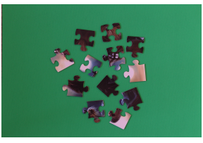
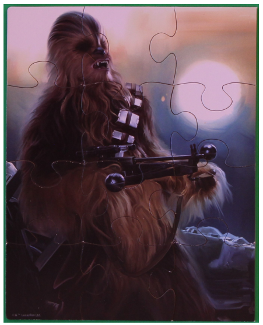

The Computer Visionaries CS 4476 : Intro to Computer Vision Georgia TechFall 2018 Final Project
Proposal
Problem Statement
Project Goal
We wish to develop a fast, robust, and accurate jigsaw puzzle solver.
The idea for this project was inspired by the work of Sholomon, David, & Netanyahu [1], as well as T. Allen [2].
Sholomon et al. demonstrate how genetic algorithms can solve digital square jigsaw puzzles.
Allen's paper focuses on solving simple physical puzzles with non-square shapes using image processing techniques.
Sholmon et al.'s method was shown to work on large puzzles (+20,000 pieces) but is fragile.
Their algorithm ignores situations where any of the pieces are missing, rotated, or damaged.
As well, their system only works on images, and was not shown to work on physical jigsaw puzzles.
Allen's method was shown to work on restricted physical puzzles.
The examples givin in his paper are of small jigsaw puzzles (fewer than 20 pieces).
His system demonstrates flexibility in its ability to solve the puzzle when the input pieces are rotated or jumbled.
Finally, Allen's algorithm failed to show to combined pieces put together (it just showed compatible pieces next to each other)
Using the above techniques, we wish to derive our own algorithm for puzzle assembly considering increasingly more complex piece shapes and rotations.
Finally, while we chose this project mostly out of intellectual curiosity, there are some practical applications that can be derived out of optimal puzzle reconstruction. For instance, optimal piece reconstruction can possibly be used towards automatic piecing-together of archeological finds, which can help quickly determine if any pieces are missing, or to stitch back together a shredded document or picture. In addition, these techniques might be useful for optimal part alignments in some engineering applications. Therefore, this work could serve some extrinsic purposes beside just solving puzzles.
Input
An image of a jigsaw puzzle that follows the bellow assumptions.
Assumptions
All pieces are facing upwards
All piece edges are clearly visible
The background is a solid color
All pieces are distinguishable from the background

Figure 1 : Example input image for our system taken from [2]
Output
A solved jigsaw puzzle image

Figure 2 : Example output image for our system taken from [2]
Real World Application
While we chose this project mostly out of intellectual curiosity,
there are some practical applications that can be derived out of optimal puzzle reconstruction.
For instance, optimal piece reconstruction can possibly be used towards automatic piecing-together of archeological finds,
which can help quickly determine if any pieces are missing, or to stitch back together a shredded document or picture.
In addition, these techniques might be useful for optimal part alignments in some engineering applications.
Therefore, this work could serve some extrinsic purposes beside just solving puzzles.
Approach
Development will occure in 2 Phases
Phase 1 : Add flexibility to existing square jigsaw solvers
Phase 2 : Convert physical jigsaw images into digital square jigsaw ones
Phase 1
We have identified several algorithms as candidates for our puzzle solver.
We plan on running these algorithms on the simple square jigsaw puzzles (no rotation, or non-square pieces) to compare their performance for selection.
One existing algorithm we will be evaluating is a genetic algorithm from the work by Sholomon et al. [1].
As stated in the paper, the problem is formulated as:
“Given n different non-overlapping pieces of an image,
the player has to reconstruct the original image,
taking advantage of both the shape and chromatic information of each piece.”
Note that rotation is not part of the problem.
The algorithm frames puzzle configurations as members of a population and uses a metric for dissimilarity between neighboring pieces as its fitness function.
Then, they apply a classic genetic optimization technique, performing mutations and crossovers amongst the most fit members of the population.
After applying the algorithm as described in the paper, we will build upon their genetic algorithm by substituting different fitness metrics and crossover operators.
Another algorithm we will apply is introduced by Gallagher [3].
Unlike Sholomon et al., which applies a standard optimization algorithm, Gallagher presents a novel technique where the puzzle is represented as a graph.
This approach does take into account the spatial orientation of pieces.
Pieces are represented as vertices and edge weights between pieces on the graph represent the output of a dissimilarity metric estimating the difference in color gradients between neighboring pieces.
Then, a version of Kruskal’s minimum spanning tree algorithm, modified to account for spatial conflicts between pieces, is applied to the graph.
The resulting tree represents a puzzle configuration that greedily minimizes dissimilarity between neighboring pieces.
Algorithm performance could be tuned by substituting the dissimilarity metric.
Based on the success of standard discrete optimization techniques in Sholomon et al.,
we can apply other discrete optimization algorithms using similar fitness/cost metrics without much modification.
Other algorithms we might apply seeking better performance include simulated annealing, random hill climbing, and estimation of distribution algorithms such as MIMIC.
Because implementations of these optimization algorithms are already readily available in libraries like Scikit-Learn,
applying each technique to the standard square jigsaw problem will require little implementation.
After our initial algorithm selection from the candidates, we will modify the selected algorithm to handle non-square pieces.
This will require random generation of non-square pieces.
Each non-square piece will contain a core square body with either a blank, head or divot on each side.
Blanks will be reserved for the edges of the puzzles and every divot will have an associated head.
Once piece generation is complete, we will assemble the outer edge of the puzzle by modifying the selected algorithm.
Finally after the the outer edge has been put together we will use the selected algorithm to fill in the puzzle body.
Once we have achieved success in assembling a jigsaw puzzle with non-square pieces we will add rotated pieces to our algorithm.
This should require less modification and only require our chosen algorithm be able to search over a larger space.
Phase 2
With the completion of phase 1, we will have a quick and robust algorithm for solving digital puzzles.
Phase 2 will focus on converting physical jigsaw puzzles into virtual puzzles then.
First we will perform image segmentation by color on the input image.
Next we will charactarize each puzzle piece by labling each corner.
Once corners have been labeled we will label each side of every piece as a divot, head, or blank.
We should be able to feed these charactarized pieces into our phase 1 algorithm.
Experiments and Results
Resources
Libraries that will be utilized: OpenCV, Scikit-Image and Scikit-Learn
Existing Puzzle-Solving Algorithms:
Constrained Minimal Spanning Tree (MST) algorithm with heuristic (Greedy-based)
Our project will be separated into two phases: algorithm exploration and end-to-end solution implementation.
Phase 1
We will implement and carry out testing on a number of algorithms which can solve the different tiers of problems we have described.
If the implemented solution solves our need, we will move onto solving the next tier. Otherwise, we will implement a different approach or improve on the current one to reach the target goal.
Experimental Setup (for each experiment):
Control Variable: Algorithm Independent Variable: Puzzle to be solved which depends on the algorithm’s capabilities Dependent Variables: Percentage of pieces in the correct position, time it takes to solve with algorithm, time it takes for a person to solve Success Criteria:
Less than 10% of pieces are in incorrect positions
It can solve a puzzle faster than the average person
Experiments:
Experiment 1 : Equal-Sized Square Pieces
Data: https://thejigsawpuzzles.com/ puzzles in square mode Input: Given an image, we can split the image in to a grid of equal-sized square windows and randomly reorganize them to form a puzzle Output: Image re-assembled optimally so that boundary differences between windows are minimal Algorithms/Concepts to consider: Kruskal’s MST algorithm [1]:
assign each puzzle piece to a vertex and the compatibilities between pairs of puzzle pieces to edge weights
every puzzle piece is included in the minimum spanning tree
ensure that the MST is constrained so that puzzle pieces do not overlap Genetic algorithm [2]:
devise a fitness function that can be applied to all the pieces of the puzzle
perform mutations and crossovers on the “fit” puzzle pieces to generate the resulting puzzle Global Assembly algorithm [2]:
because every border piece of the puzzle has 1+ flat sides,
use piece matching and brute-force concepts to stitch together the border of the puzzle first,
and then stitch together the inner pieces of the puzzle
use concepts from the “branch-and-bound” algorithm,
such as using a grid structure to bound the inner puzzle pieces,
to find the most optimal puzzle piece that fits the “current slot” in the grid
Experiment 2 : Irregular Shaped Pieces
Data: https://thejigsawpuzzles.com/ puzzles in classic mode Input: Image of disorganized pieces for a simple puzzle – puzzle pieces should be of irregular shape, to distinguish from square pieces of last experiment. Puzzle pieces should also be orientated in the same way for the optimal solution Output: Image of the puzzle pieces put together to form the most optimal puzzle solution Algorithms/Concepts to consider: Genetic algorithm [2]:
devise a fitness function that can be applied to all the pieces of the puzzle
perform mutations and crossovers on the “fit” puzzle pieces to generate the resulting puzzle Global Assembly algorithm [2]:
because every border piece of the puzzle has 1+ flat sides, use piece matching and brute-force concepts to stitch together the border of the puzzle first, and then stitch together the inner pieces of the puzzle
use concepts from the “branch-and-bound” algorithm, such as using a grid structure to bound the inner puzzle pieces, to find the most optimal puzzle piece that fits the “current slot” in the grid Feature Detection + Pattern Recognition algorithm [4]:
utilize the SIFT algorithm/method from the OpenCV library to perform feature detection operations on each puzzle piece and, therefore, decide which pieces have similar features and can be “stitched together”
utilize edge detection techniques to get the “outlines” of every image
Experiment 3: Rotated Irregular Shaped Pieces
Data: If we can’t find any online puzzles that already has rotated pieces, we can take the dataset from the previous experiment and manually rotate the pieces Input: Same input as the previous experiment, except now the pieces can be rotated in any direction – orientation must now be taken into account Output: Image of the puzzle pieces put together to form the most optimal puzzle solution Algorithms/Concepts to consider: Standardize orientation of all puzzle pieces (iterate through all puzzle pieces and orient all the pieces to face the same direction) and then apply the algorithms/concepts to consider from Tier 2 (previous section) Feature Detection + Pattern Recognition algorithm [4]:
disregard standardizing the orientation of all puzzle pieces and just apply feature detection, pattern recognition, and edge detection techniques
Phase 2
Using the knowledge we gained from phase 1, we will implement an end-to-end algorithm which can take in an image of puzzle pieces on a table, solve the puzzle and return the final generated image from the combination of pieces.
Success Criteria
Less than 10% of pieces are in incorrect positions
It can solve a puzzle geared towards young children
Experiment:
Real Life Puzzle Data: Puzzles bought from the store Input: A picture taken from a camera of the pieces, all of which are irregularly shaped and are arbitrarily rotated Output: Image of the puzzle pieces put together to form the most optimal puzzle solution
Uncertainties:
The chosen error rate of less than 10% is an estimate. Since we have not yet implemented the different algorithmic approaches, we cannot be certain whether this target is feasible or not. We may modify it as we start coding the project.
We will be applying our algorithms to relatively simple puzzles initially. If we achieve solid performance, we will move onto more complex images with a larger number of pieces. We do not know how complicated a puzzle we will be able to solve.